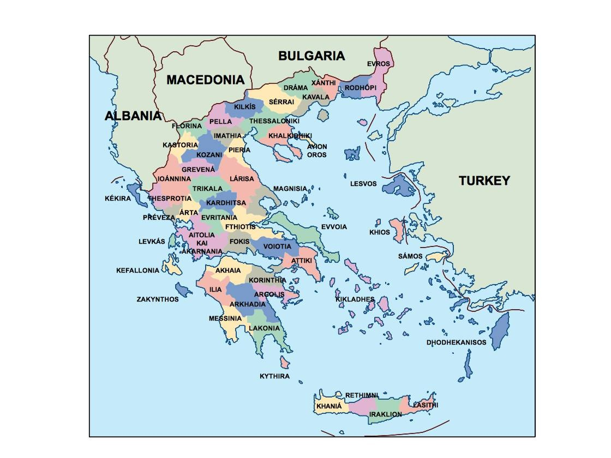
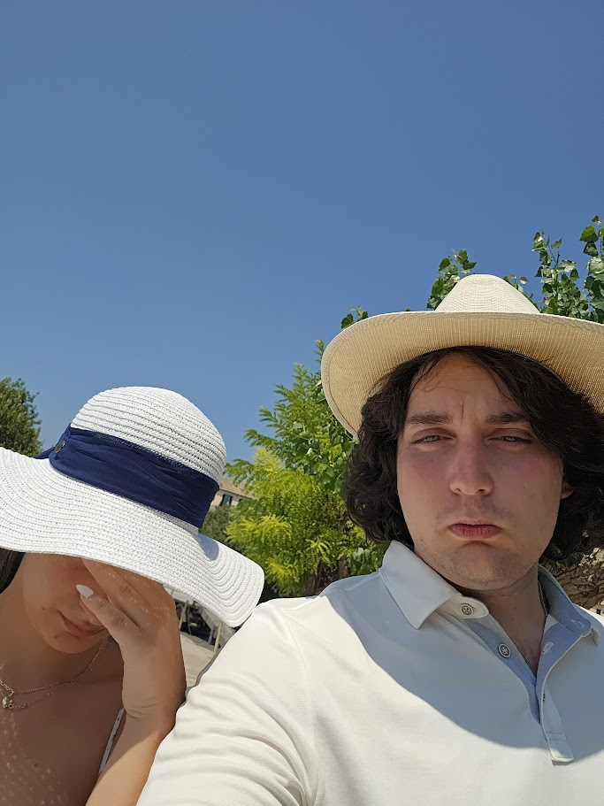
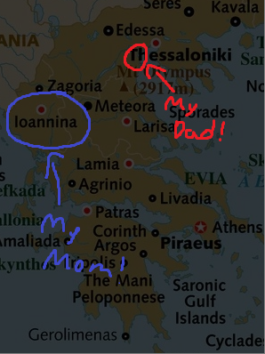

Visit Greece - John's Guide To Greece!

Map of Greece
Greece is a country in southeastern Europe with thousands of islands throughout the Aegean and Ionian seas. Each region has something unique to offer. Whether that be experiences, food, or places to visit, Greece has it all. The most distinctive regions are the islands of course. Separated from the mainland, each island offers a unique experience that you can't find anywhere else.About Me

My name is John Treon, I am a 2nd-generation Greek-American who has been visiting Greece since I was a child. I have a lot of family
in Greece, and I have been lucky enough to visit many of the beautiful places that Greece has to offer. I have been to the islands, the
mountains, the cities, and the countryside. I have eaten the food, swam in the sea, and danced at the festivals. Greece is a wonderful
country with the most welcoming people you will ever meet. I hope that my travel log will inspire you to visit Greece and experience a
little bit of my culture!
Pictured on the left, is myself, with my amazing hat, of which, my wife offered severe disdain to. I thought it was cool. I hope you do too.
Pictured on the left, is myself, with my amazing hat, of which, my wife offered severe disdain to. I thought it was cool. I hope you do too.
Where my Family is From!

My family comes from two main regions of Greece: Katerini, and Ioannina. My father is from Katerini, a small city in northern Greece, near Thessaloniki
that is known for its city center, full of shops, cafes, and restaurants. The city is quaint, but that means you can walk everywhere! On
the other hand Ioannina, where my mother is from, is a rural area in northwestern Greece, near Albania. The area is known for its large lake,
and vibrant nightlife. It is home to many mountains, and is a great place to go hiking. I have been to both places many times, and I love them
both. I hope you get to visit them too!